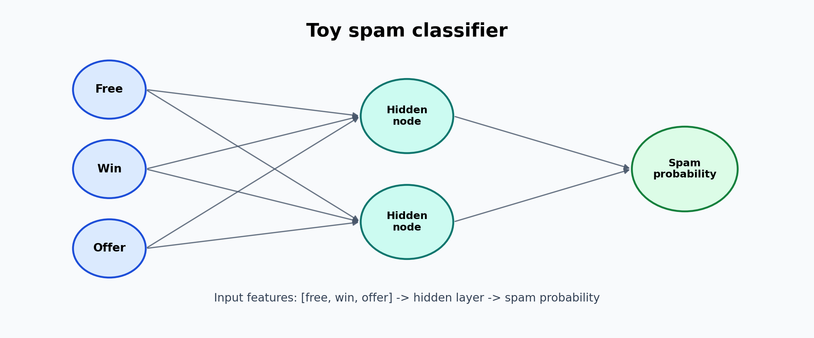
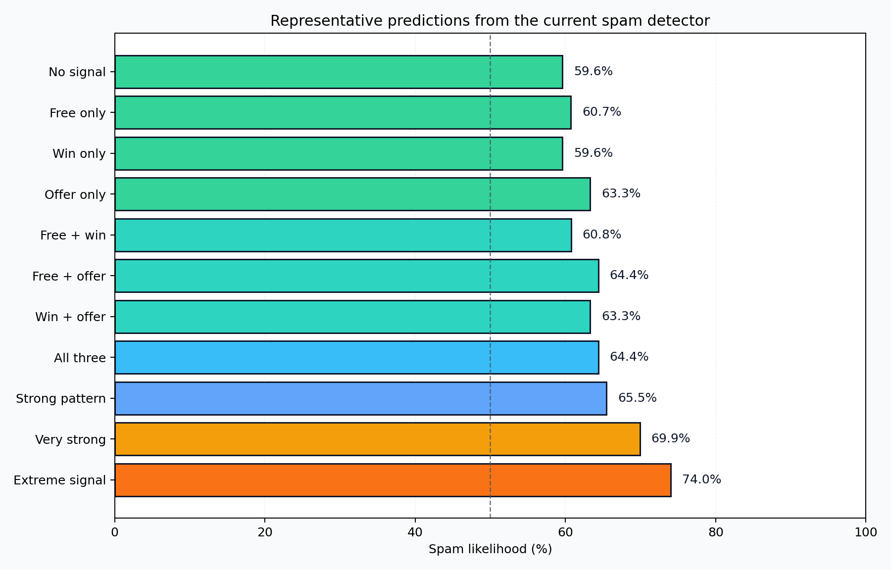

This project is a small neural network built from scratch for classification tasks. The idea is to understand the fundamentals of forward passes, weights, activations, loss functions, and training logic without relying on a framework.
It is a good example of experimenting with machine learning concepts in a very direct and transparent way.
This toy project uses a simple neural network structure: three input features, a hidden layer, and one output node that predicts whether the input looks like spam.

The model works on a tiny synthetic dataset built around three simple features:
Imagine an email like:
“Congratulations! You have won a free offer today. Claim your prize now!”
Before the model sees it, the text is simplified into a count of suspicious words:
This is then converted into a feature vector: [1, 1, 1].
The neural network processes this input and outputs a probability, for example around 85–90% spam likelihood for a message with multiple suspicious signals.
This visualization shows a few representative examples the model is asked to classify. The more suspicious the combination of words, the higher the spam probability. It is a quick sanity check to see whether the network is behaving in a sensible way for simple toy examples.
